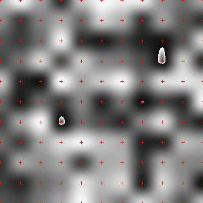
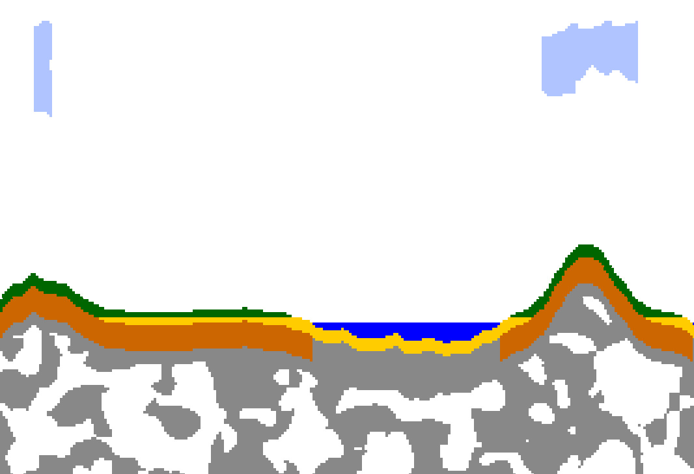

In the summer of 2016, I decided to try to make a terrain generator. (Or rather, to go back to experimenting with terrain generation, as I had tried in the past.) In order to do this, I created my own noise generation algorithm. I could have just used something like Perlin Noise but a common theme with my projects is "Re-inventing the wheel is okay if you learn something in the process." Also, if I make my own algorithms, I'll be sure to understand them. (Usually)
Anyway, I started making a noise generation algorithm. My base idea was simple: If we assign random values to points on a grid, and then interpolate, we'll end up with smooth noise. I picked a seedable random number generator off the Internet (I probably made a bad choice – more on this below) and started prototyping my idea in Javascript. Pretty soon I had something that generated stuff like this:

An early version of my noise generation algorithm. (Note that the red crosses were added for this post)
Here's the detailed algorithm by which this image was generated:
- Each pixel in the image was iterated over. For each pixel:
- The program calculated the location of the square that contained the point. (Corners of squares have been marked by red crosses. The size of a square is equal to the frequency of the noise. In this case: 40 pixels)
- The program calculated the location of the pixel relative to the square
- The pseudo-random number generator was seeded with the coordinates of each corner of the square. After being seeded, the random values at each corner were calculated.
- Based on the pixel's location in the square, different values at each corner were blended together using simple ease-in, ease-out interpolation. The resulting value was returned.
- The value was drawn on the Javascript canvas.
There are some obvious problems with the above image. Most noticeable is the blockiness of the image. Also noticeable are the 3 white hotspots in the image. (I'm not actually sure what caused them. They seem to be some sort of clamping/looping problem...) I took care of the blockiness problem by combining two sets of noise to get the final result: the first set having the corners of the squares aligned as above, the second set having the corners offset by half the frequency. This made for smooth looking noise.
Because my noise algorithm was a fairly slow, and locked up my web browser while I was rendering images like the above, I decided to repurpose my Fractal Rendering Program to display noise generated by my algorithm. The arguments to functions for iterating fractals are basically identical to the arguments to my noise generation function. They both take in x and y coordinates, calculate values for all points independently, and return floating point values.
After getting my noise generator working, I wrote a first a 2.5D (Colors with a 2D heightmap) terrain generator based on it, and later a side-view based terrain generator. My terrain generators worked well. As I common with me, I eventually moved on to other projects.
Fast forward a few months to when I became interested again in making a 2D platformer. I liked the terrain generators I had made previously, but they were kind of slow. I wondered if the seedable random number generator was the problem. It was supposedly "cryptographically secure", but I didn't care about security. All I cared was it generated values that didn't look repetitive. Based on this idea, I looked for a really simple function that produced reasonably random looking results, and I eventually settled on an FNV Hash. I quickly implemented this and packaged my noise generator in a simple Javascript library I call QuickNoise. It runs much faster than my original version, and produces great results! As a simple example, here's a bit of terrain that uses QuickNoise as a starting point:

Some terrain made with QuickNoise as the noise generator
Comment on Twitter